Innerhalb der modernen bürgerlichen Gesellschaft versucht Identität etwas eindeutig Definierbares zu beschreiben. Zur Kategorisierung werden psychologische und soziologische Identitätsmuster verwendet. Die daraus resultierende Einordnung in stereotype Identitätsgruppen, vermitteln allerdings nur ein oberflächliches Bild der Mitmenschen.
George Herbert Mead sagt dazu: »Identität entwickelt sich; sie ist bei der Geburt anfänglich nicht vorhanden, entsteht aber innerhalb des gesellschaftlichen Erfahrungs- und Tätigkeitsprozesses, das heißt im jeweiligen Individuum als Ergebnis seiner Beziehungen zu diesem Prozess als Ganzem und zu anderen Individuen innerhalb dieses Prozesses.«
George Herbert Mead: Geist, Identität und Gesellschaft aus der Sicht des Sozialbehaviorismus. Hrsg.: Charles W. Morris. Suhrkamp, Frankfurt a. M. 1968. S. 177.
In diesem Prozess formen und entwickeln sich Ansichten darüber, was gesellschaftlich richtig, falsch und erstrebenswert ist. Ein Ideal, welches z.B. von der Mehrzahl in der westlichen Kultur lebenden Menschen erreicht werden möchte, ist wohlhabend, jung, gesund und global aktiv zu sein.
Das ist der Ansatzpunkt für Werbung, Märkte und Politik. Sie entwickeln und vermitteln gezielt Identitätsräume und -klischees, die auf die Idealvorstellungen dieser Gruppen zugeschnitten sind. Sie generieren Aufmerksamkeit und simulieren einen gesellschaftlichen Idealzustand, passend zur jeweiligen Identitätsform.
In der digitalen Welt analysieren Algorithmen menschliche Vorlieben und Interessen. Sie kategorisieren diese Interessen und präsentieren uns gezielt angepasste Werbung, die zu den jeweiligen Interessen und Identitäten passen.
Dabei stellen sich mir Fragen wie: Was bedeutet Identität für einen Menschen? Wie entsteht die Identität eines Menschen? Was unterscheidet die eigene Identität von einer gesellschaftlich anerkannten Identität?
Ich möchte in dieser Studienarbeit versuchen, Menschen zu animieren, sich mit ihrer eigenen Identität auseinander zu setzen. Ich möchte ihnen die Möglichkeit anbieten, sich selbst zu befragen und dabei in unterschiedliche Positionen/Blickwinkel zu schlüpfen. Dabei folge ich u.a. der Fragestellung: »Was unterscheidet mich von anderen Menschen, und was habe ich mit ihnen gemeinsam?«.
Ich möchte aber auch verdeutlichen, dass sich der Identitätsbegriff in ständiger Veränderung befindet. Soziale Einflüsse und Veränderungen zwingen den Menschen, sich ständig mit seiner Identität – ob nun bewußt oder unbewußt – auseinander zu setzen. Selbsterkenntnis und Selbstgestaltung formen unser Denken und die Entwicklung unserer Individualität.
Um die Betrachter*innen meiner Studienarbeit in einer ungewohnten Art und Weise mit dem Thema zu konfrontieren, benutze ich Fieldrecordings und Audioauszüge aus Dokumentation, um den Mikrokosmos einer menschlichen Identität klanglich zu visualisieren. Klänge vermischen sich, erzeugen etwas Neues, werden in der Masse diffus, so dass man zum Strukturieren gezwungen wird, um es für sich selbst wieder verständlicher zu machen und eine Essenz herauskristallisieren zu können.
Dieses Konzept habe ich als webbasierte Plattform realisiert, damit möglichst viele Nutzer*innen mit ihrem persönlichen Device Zugang dazu haben können.
Recherche
In meinen Recherchen habe ich nach verschiedenen Definitionen von Identität gesucht. Nach dem ich das Wort »Identität« im deutschen Duden nachgeschlagen habe, war ich vorerst stark irritiert, wusste aber auch, dass diese Themen sehr uneindeutig für die meisten Menschen ist.
Im Duden wird der Begriff wie folgt erklärt:
1. a) Echtheit einer Person oder Sache; völlige Übereinstimmung mit dem, was sie ist oder als was sie bezeichnet wird
b) (Psychologie) als »Selbst« erlebte innere Einheit der Person
2. völlige Übereinstimmung mit jemandem, etwas in Bezug auf etwas; Gleichheit
Quelle: https://www.duden.de/rechtschreibung/Identitaet, abgerufen am 11. Februar 2019
Erst nach dem ich verschiedene Bücher quer gelesen und versucht habe zu verstehen, stieß ich auf das Buch »Identität« von Hans-Peter Frey und Karl Hauser, welches die Zusammensetzung einer menschlichen Identität für mich plausibel beschreibt:
In der Sozialwissenschaft wird der Begriff Identität in unterschiedlichen Zusammenhängen benutzt. Der Begriff kann eine soziale, öffentliche, situierte Identität eines Individuums in einem sozialen System beschreiben, die eine Kombination von Merkmalen und Rollenerwartungen identifizierbar machen.
Identität kann aber auch die Kennzeichnung von sozialen Systemen beschreiben. Dabei werden keine einzelnen Personen beschrieben, vielmehr Gruppen, Organisationen, Schichten, Klassen und Kulturen. Also kulturelle Identität, ethnische Identität, nationale Identität, Gruppenidentitäten, corporate Identitäten oder auch soziale Identitäten.
Bekannte Synonyme dafür sind Autostereotypen, Heterotypen, Wir-Gefühl, Klassenbewußtsein oder der Begriff Image. Hier werden die Merkmale einer objektbezogenen Identität aus der Außenperspektive definiert. Identität die eine Person aus sich selbst, aus der persönlichen Innenperspektive definiert, entstehen aus einem selbst reflektierten Prozess, in dem Wissen und Erfahrung verarbeitet werden.
In Literatur und Forschung werden dafür Begriffe wie persönliche, personale, individuelle, subjektive Identitätserfahrung als Identitätsgefühl, als Ich-Identität, als Selbst-Identität, als Individualität oder als Selbst-Schemata benutzt.
»Persönliche Identität ist keine Eigenschaft im Sinne eines dauerhaften Besitzes.«
Quelle: Hans-Peter Frey und Karl Hauser »Identität«, Stuttgart: Ferdinand Enke Verlag, 1987, S. 3 , 4 & 11.
Die menschliche Identität entwickelt sich also immer weiter, ist ständig im Prozess und das trifft auf jedes einzelne menschliche Individuum auf diesem Planeten zu.
»Es gibt ganz viele Nischen im Leben, es gibt auch viele Nischen über die Zeit – und die Menschheit als Ganzes ist gut vorbereitet für zukünftige Herausforderungen, wenn wir alle ein bisschen anders sind.«
Quelle: https://www.deutschlandfunkkultur.de/psychologie-warum-unsere-identitaet-sich-staendig-wandelt.976.de.html?dram:article_id=393688, abgerufen am 15. Februar 2019
Parameter & Kategorien
Durch meine Recherchen habe ich festgestellt, wie umfangreich und individuell eine menschlichen Identität zusammengesetzt sein kann. Allein durch Reflexion und neue soziale Umstände verändert und entwickelt sich eine menschliche Identitäten individuell immer weiter.
Dementsprechend habe ich mich entschieden, so viele eindeutige, wie uneindeutige Begriffe als Parameter und Kategorien einer menschlichen Identität zu benutzen. Dabei hab ich mich bei Stereotypen und Klischees bedient, aber auch bei Formularen, wie beispielsweise eines Hartz 4 Antrags der Bundesagentur für Arbeit oder Fragebögen des Finanzamtes. Bewußt habe ich dabei Begriffe benutzt, welche die Betrachter*innen der Arbeit gezielt provozieren bzw. zum Denken auffordern.
Wichtig war mir in meiner Arbeit mit Audiomaterial zu arbeiten. Dafür suchte ich möglichst neutrale Klänge. Aber was ist schon neutral oder objektiv? Letztendlich kann ich nur subjektiv handeln, denn nur ich empfinde die jeweiligen Klänge als ideale Entsprechung der jeweiligen Parameter und Kategorien. Deshalb habe ich mich entschieden, nicht nur mit Klängen, sonder auch mit konkreten Aussagen aus Interviews zu arbeiten. Die Interviewschnipsel gehen eine klare Position ein und ermöglichen es, eine andere Perspektive einzunehmen. Zur Übersicht habe ich deshalb hier die einzelnen Klänge tabellarisch aufgelistet und ihre technischen und philosophischen Hintergründen erläutert: … Liste der einzelnen Klänge
Gestaltungskonzept
Das digitale Layout der webbasierenden Plattform sollte für mich einen möglichst neutralen, auf den ersten Blick unübersichtlichen Charakter erzeugen, um den diffizilen Umfang einer möglichen menschlichen Identität zu versinnbildlichen. Dabei habe ich mich wiederum von Formularen inspirieren lassen, in denen diverse Punkte und Unterpunkte aufgelistet werden.
Durch die vielen unterschiedlichen Kategorien einer menschlichen Identität, fand ich die Idee von Buttons sehr naheliegend. Die Beschränkung der Auswahlmöglichkeiten der Buttons zwingen Nutzer*innen sich für etwas Bestimmtes zu entscheiden. Sie müssen also von vornherein kategorisieren. Somit gebe ich einleitend ein Schwarz/Weiss-Schema vor.
Konzeptionell startet die Webseite dementsprechend in Schwarz und Weiss. Kommen aber im Verlauf der Auseinandersetzung immer weitere Komponenten hinzu, verschiebt sich das Schwarz/Weiss-Schema hin zur Farbe. Die Farbe bekommt somit eine zunehmend größere Rolle und soll durch das Hinzufügen immer weiterer Kategorien und Parameter, auch emotionale Aspekte widerspiegeln.
Gestaltungselement
Das offensichtlichste Gestaltungselement ist die Visualisierung des Klangs. Diese grafische »Identitätsblase«, wie ich es nenne, pulsiert korrespondierend zum Klang. Die Blase verändert sich nicht nur durch den internen Klang des Devices, sondern auch durch den externen. Ebenso haben einige Parameter und Kategorien eine visuelle Auswirkung auf die Blase. Dementsprechend kann sie mal klein, groß, verstreut, zentriert, dezentriert oder aufgelöst sein.
Konzeptionell sehe ich die Blase als die visuelle Entsprechung der einzigartigen Identität des Individuums, welches in ständiger Veränderung befindlich ist.
In meiner Übersicht der einzelnen Kategorien und Parameter habe ich deshalb auch die jeweiligen Auswirkungen auf die »Identitätsblase« aufgelistet.
So wie die Blase, verändert sich auch ihr Hintergrund farblich. Entsprechend reagiert er auf die Umweltgeräusche des jeweiligen Devices.
Schrift
Die Arial nimmt man wahrscheinlich nur unterbewusst wahr, da sie vermutlich die am häufigsten verwendete Schrift neben der Times New Roman ist. Sie wird in den unterschiedlichsten Kontexten und Bereichen eingesetzt und ist, meiner Ansicht nach, unemotional, konstruiert und pragmatisch. Somit passt die Arial hervorragend in diesen thematischen Kontext. Auch eine Schrift kann eine Identität haben oder ausdrücken. Im Spiel damit, habe ich sie in eine variable Schrift umfunktioniert, bzw. habe einen zweiten experimenteller Schnitt zur Regular hinzugefügt, der sich stufenlos interpolieren lässt und das konstruierte, unemotionale Bild der Arial bricht.

Code
Die Applikation ist eine auf HTML, CSS und JavaScript basierende Webseite. Um mit den Parametern und Kategorien interagieren zu können, habe ich größtenteils mit der JavaScribt Libary P5JS gearbeitet. Ein großer Vorteil ist bei P5JS, dass extra für Kreative und nicht für Informatiker gebaut wurde. Durch kurze Befehlsketten ist P5JS viel klarer und einfacher zu verstehen als herkömmlicher JavaScript Code. Dennoch bin ich bei meiner Arbeit immer wieder an meine Grenzen gestoßen. Meist wurde mein Code immer länger als ursprünglich geplant. Diverse Extras wie externer Sound, Webcams, Spektrumanalyse, Gesichtserkennung und visuelle Effekte mußten hinzugefügt werden. Nicht immer haben sich die Extras miteinander vertragen. Selbst mein recht neuer Rechner wurde heiß, konnte bestimmte Extras nicht abspielen oder funktionierte plötzlich nicht mehr mit meinem üblichen Browser. Manche Extras haben einfach zu viel Rechenleistung in Anspruch genommen, so dass mein Rechner überfordert war. Dementsprechend ist sehr viel Zeit mit der Behebung von Fehlern vergangen. Nun weiß ich jedoch was mit JavaScribt möglich ist und was ich meinem, aber auch anderen Rechnern zutrauen kann und was nicht.
Impressum
Jacob Stoy, 2019
Studiengruppe Informationsdesign
Burg Giebichenstein Kunsthochschule Halle
Betreut durch Prof. Matthias Görlich und Peter Hermans
Beta Version 0.1
Jacob Stoy, 2019 | Visual Strategies and Stories | Studiengruppe Informationsdesign | Burg Giebichenstein Kunsthochschule Halle